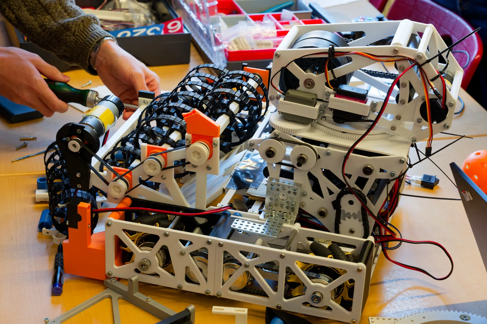
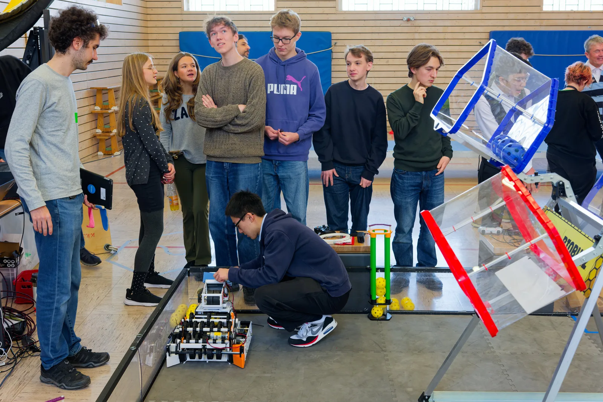

Design-Lebenszyklus
Der Engineering-Pfad
Unser Entwicklungsweg folgte einer strengen iterativen Schleife: Planen, Bauen und Optimieren. Wir entwickelten uns von „Karton & Panzerband“ hin zu einem zu 90 % 3D-gedruckten Chassis.
- Prototyping: Validierung der Physik mit Low-Fidelity-Modellen.
- CAD-Iteration: Vollständige 3D-Baugruppe zur Vermeidung räumlicher Kollisionen.
- Fertigung: 3D-Druck für hochpräzise Eigenbauteile.
- Iterationsprotokolle: Dokumentierte mechanische Entwicklung von V1.0 bis V3.0.
Variabler Pitch-Intake
Unser Intake nutzt ein hochgriffiges, nachgiebiges Radsystem auf einem schwenkbaren Arm, das durch eine duale Kettensynchronisation eine konstante Drehmomentübertragung sicherstellt.
- Aktiver Grip: Hochgriffige Lego-Gummiräder.
- Leistung: 3.700 U/min-Motor, übersetzt für schnelle Aufnahme.
- Übertragung: Doppelkettenantrieb zur Entkopplung des Motorgewichts.
„Design-Notiz: Lego-Gummi liefert das nötige ‚Nachgeben‘ für unregelmäßige Toleranzen.“
Drei-Kammer-Indexer
Das Herzstück unserer Effizienz. Wir verabschiedeten uns vom klassischen Hopper und setzten auf eine segmentierte „Kleeblatt“-Geometrie für störungsfreies, hochfrequentes Feuern.
- Indexierbarer Flicker: Reset-Zeit unter 0,5 s.
- Pyramidenkern: Passiver 3D-gedruckter Verteiler zur sauberen Positionierung.
- Kinetische Sortierung: Zwingt eingehende Bälle in fixierte Positionen.
360°-Präzisionsturm
Um eine flache Bauweise zu erreichen, entwickelten wir ein eigenes DIY-„Sandwich“-Lagersystem, bei dem die Rotationszahnräder direkt in die Platten integriert sind.
- V3-Finalversion: Minimaler Bauraum mit zentrierter Achse.
- Integrierte Haube: Echtzeit-Flugbahnsteuerung (Pitch).
- Gewichtseinsparung: Eigenbau ist leichter als kommerzielle Alternativen.
Steuerungssysteme
Sensordatenfusion & Logik
Unsere Softwarearchitektur überwindet Hardware-Grenzen durch fortschrittliche Computer Vision und mathematische Lokalisierung. Wir behandeln den Roboter als autonomen Agenten, der seine Position relativ zu den Feldzielen versteht.
- Dreischeiben-Odometrie: Echtzeit-Berechnung der Pose (x, y, θ) mit frei laufenden Rädern und hochauflösenden Encodern.
- Kammer-Vision: Eine einzelne Kamera nutzt OpenCV-Farbfilterung, um den durchschnittlichen Farbton der internen Slots zu überwachen und Ballmuster zu erkennen.
Autonome Zielerfassung
Mit einer dedizierten Hochgeschwindigkeits-Mono-Kamera führt das System eine AprilTag-Lokalisierung durch, um die benötigte Ballsequenz zu wählen und den Hauben-Pitch automatisch anzupassen.
Die Pattern-Auto-Burst-Logik indexiert die Kammer anhand der Farbfilterdaten neu und feuert nur, wenn die korrekte Farbe mit dem Flicker ausgerichtet ist. Dadurch wird menschliches Versagen vollständig aus dem Scoring-Prozess entfernt.
BIOBUZZ Bot · 2026/2027
01. Architektur & laufende Weiterentwicklung
Entwickelt für die Saison 2026/2027 (FIRST® CANOPY™ · BIOBUZZ) und beim Scrimmage Stuttgart erstmals im Match-Einsatz getestet. Während Basis-Chassis, mehrreihiger TPU-Intake, zweiseitiger Transfer und BB-Kugellager-Turm bereits laufen, arbeiten wir aktiv an den nächsten Ausbaustufen:
- Zwei Ballgrößen (In Arbeit): Abstimmung von Intake-, Transfer- und Shooter-Geometrie für den zuverlässigen Umgang mit den unterschiedlich großen Spielelementen Nektar und Pollen.
- Kein Backspin-Flywheel: Tests zeigten, dass Bälle durch Backspin nach dem Treffer jedes Mal wieder aus dem Ziel herausspringen – daher verzichten wir bewusst auf Backspin.
- Blüten-Mechanismus (In Arbeit): Entwicklung einer zusätzlichen Vorrichtung, um Pollen und Nektar sauber aus den Spielfeld-Blüten herauszulösen.

02. Individueller 3D-gedruckter Antriebsstrang
Konstruiert für maximale Bauraumeffizienz und volle Intake-Breite: Beide Antriebsseiten (links und rechts) sind vollständig 3D-gedruckt, intern mit Metall-Abstandshaltern verschraubt und über einen Aluminium-goBILDA-Rahmen starr verbunden.
- Zweigeteilter 3D-Druck-Aufbau: Linker und rechter Pod bestehen aus einer gewichtsoptimierten 3D-Druck-Fachwerkstruktur, verbunden durch Metall-Abstandshalter für hohe Verwindungssteifigkeit.
- goBILDA Aluminium-Rahmen: Eine Aluminium-goBILDA-Schiene verbindet beide 3D-gedruckten Seiten stabil miteinander und trägt die Antriebsmotoren im Heck.
- Riemen- & Pulley-Antrieb: Zahnriemen und Riemenscheiben sorgen in den schmalen Pods für eine besonders zuverlässige und spielfreie Kraftübertragung.
- Maximale Intake-Breite & kompakte Elektronik: Die Pods sitzen so weit außen wie möglich für maximale Aufnahme-Breite, während die Elektronik-Halterung extrem flach und platzsparend integriert ist.
03. Mehrreihiger TPU-Intake & Transfer
Statt Standardrädern drucken wir flexible TPU-Räder komplett selbst. So können wir Durchmesser, Nachgiebigkeit und Grip flexibel anpassen und direkt auf die BIOBUZZ-Spielelemente abstimmen.
- Selbstgedruckte TPU-Räder: Flexibles TPU passt sich den Bällen optimal an und erlaubt schnelle Größen- und Steifigkeitsanpassungen per 3D-Druck.
- Riemengetriebener Dauerkontakt: Mehrere über Zahnriemen angetriebene Reihen halten den Ball durchgehend in Kontakt, damit er über die gesamte Rampenlänge zuverlässig gefördert wird.
- Zweiseitiger Stirnrad-Transfer: Kleine TPU-Räder übernehmen die Bälle von der Intake-Kante direkt in den Turm; ein Motor mit zusätzlichem Stirnrad kehrt die Drehrichtung um, sodass Pollen gleichzeitig von beiden Seiten nach oben gedrückt wird.


04. Kompakter BB-Turm & Rollen-Shooter
Um oberhalb des Transfers möglichst wenig Bauraum zu beanspruchen, dreht sich unser Turm auf einer maßgefertigten BB-Kugel-Lagerung – mit beiden Servos direkt auf dem Turm montiert.
- BB-Kugel-Drehring: Verwendet BB-Pellets in einer selbstgedruckten Laufbahn für eine extrem flache und platzsparende Bauweise.
- Direkt montierte Dual-Servos: Beide Servos sitzen direkt auf dem Turm und sparen Chassis-Platz: Ein Servo steuert die Turmdrehung, der zweite blockiert den Ball und reguliert die Schussfrequenz.
- Rollen an der Turmrückseite: Die Beschleunigungsrollen sitzen hinten im Turm und werfen ohne Backspin ab, damit getroffene Bälle im Ziel nicht wieder herausspringen.
Scrimmage-Tests & Steuerung · BIOBUZZ
05. Feld-Validierung & Software-Abstimmung
Die ersten Testspiele beim Scrimmage Stuttgart haben das mechanische Grundkonzept bestätigt und gezeigt, worauf wir in Software und Feinmechanik als Nächstes fokussieren.
- TeleOp-Zyklussteuerung: Abstimmung von Intake, zweiseitigem Transfer und dem Blockier-Servo im Turm für gleichmäßige, schnelle Schussfolgen.
- Dual-Größen-Kalibrierung (In Arbeit): Feinjustierung der Rollen-Abstände und Taktung für die unterschiedlichen Ballgrößen von Nektar und Pollen.
- Autonom & Blüten-Abläufe (In Arbeit): Entwicklung angepasster Pfade und Kamera-Erkennung für Hives, Flowers und Feldziele.

Scrimmage Stuttgart im Einsatz
Erste Match-Tests, Fahrer-Koordination und schnelle Elektronik-Checks zwischen den Qualifikationsrunden mit unserem BIOBUZZ-Prototyp.